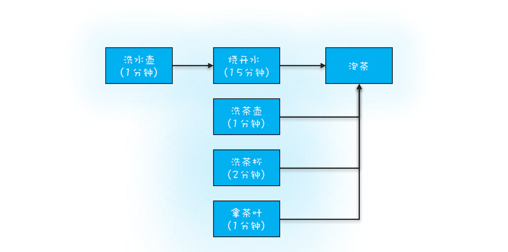
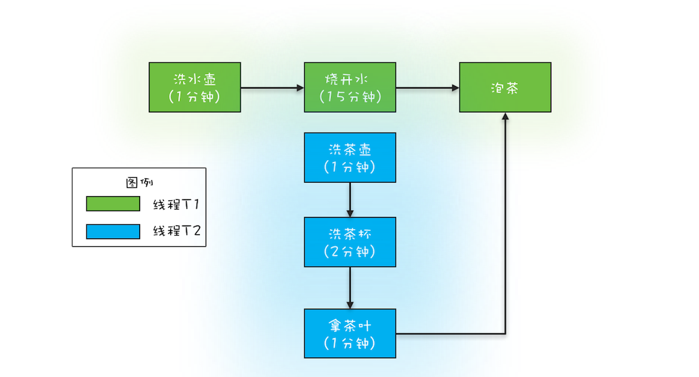

- 00 学习攻略 如何才能学好并发编程？.md.html
- 00 开篇词 你为什么需要学习并发编程？.md.html
- 01 可见性、原子性和有序性问题：并发编程Bug的源头.md.html
- 02 Java内存模型：看Java如何解决可见性和有序性问题.md.html
- 03 互斥锁（上）：解决原子性问题.md.html
- 04 互斥锁（下）：如何用一把锁保护多个资源？.md.html
- 05 一不小心就死锁了，怎么办？.md.html
- 06 用“等待-通知”机制优化循环等待.md.html
- 07 安全性、活跃性以及性能问题.md.html
- 08 管程：并发编程的万能钥匙.md.html
- 09 Java线程（上）：Java线程的生命周期.md.html
- 10 Java线程（中）：创建多少线程才是合适的？.md.html
- 11 Java线程（下）：为什么局部变量是线程安全的？.md.html
- 12 如何用面向对象思想写好并发程序？.md.html
- 13 理论基础模块热点问题答疑.md.html
- 14 Lock和Condition（上）：隐藏在并发包中的管程.md.html
- 15 Lock和Condition（下）：Dubbo如何用管程实现异步转同步？.md.html
- 16 Semaphore：如何快速实现一个限流器？.md.html
- 17 ReadWriteLock：如何快速实现一个完备的缓存？.md.html
- 18 StampedLock：有没有比读写锁更快的锁？.md.html
- 19 CountDownLatch和CyclicBarrier：如何让多线程步调一致？.md.html
- 20 并发容器：都有哪些“坑”需要我们填？.md.html
- 21 原子类：无锁工具类的典范.md.html
- 22 Executor与线程池：如何创建正确的线程池？.md.html
- 23 Future：如何用多线程实现最优的“烧水泡茶”程序？.md.html
- 24 CompletableFuture：异步编程没那么难.md.html
- 25 CompletionService：如何批量执行异步任务？.md.html
- 26 Fork_Join：单机版的MapReduce.md.html
- 27 并发工具类模块热点问题答疑.md.html
- 28 Immutability模式：如何利用不变性解决并发问题？.md.html
- 29 Copy-on-Write模式：不是延时策略的COW.md.html
- 3 个用户来信 打开一个新的并发世界.md.html
- 30 线程本地存储模式：没有共享，就没有伤害.md.html
- 31 Guarded Suspension模式：等待唤醒机制的规范实现.md.html
- 32 Balking模式：再谈线程安全的单例模式.md.html
- 33 Thread-Per-Message模式：最简单实用的分工方法.md.html
- 34 Worker Thread模式：如何避免重复创建线程？.md.html
- 35 两阶段终止模式：如何优雅地终止线程？.md.html
- 36 生产者-消费者模式：用流水线思想提高效率.md.html
- 37 设计模式模块热点问题答疑.md.html
- 38 案例分析（一）：高性能限流器Guava RateLimiter.md.html
- 39 案例分析（二）：高性能网络应用框架Netty.md.html
- 40 案例分析（三）：高性能队列Disruptor.md.html
- 41 案例分析（四）：高性能数据库连接池HiKariCP.md.html
- 42 Actor模型：面向对象原生的并发模型.md.html
- 43 软件事务内存：借鉴数据库的并发经验.md.html
- 44 协程：更轻量级的线程.md.html
- 45 CSP模型：Golang的主力队员.md.html
- 用户来信 真好，面试考到这些并发编程，我都答对了！.md.html
- 结束语 十年之后，初心依旧.md.html
- 捐赠
23 Future：如何用多线程实现最优的“烧水泡茶”程序？
在上一篇文章《22 | Executor与线程池：如何创建正确的线程池？》中，我们详细介绍了如何创建正确的线程池，那创建完线程池，我们该如何使用呢？在上一篇文章中，我们仅仅介绍了ThreadPoolExecutor的 void execute(Runnable command) 方法，利用这个方法虽然可以提交任务，但是却没有办法获取任务的执行结果（execute()方法没有返回值）。而很多场景下，我们又都是需要获取任务的执行结果的。那ThreadPoolExecutor是否提供了相关功能呢？必须的，这么重要的功能当然需要提供了。
下面我们就来介绍一下使用ThreadPoolExecutor的时候，如何获取任务执行结果。
如何获取任务执行结果
Java通过ThreadPoolExecutor提供的3个submit()方法和1个FutureTask工具类来支持获得任务执行结果的需求。下面我们先来介绍这3个submit()方法，这3个方法的方法签名如下。
// 提交Runnable任务
Future<?>
submit(Runnable task);
// 提交Callable任务
<T> Future<T>
submit(Callable<T> task);
// 提交Runnable任务及结果引用
<T> Future<T>
submit(Runnable task, T result);
你会发现它们的返回值都是Future接口，Future接口有5个方法，我都列在下面了，它们分别是取消任务的方法cancel()、判断任务是否已取消的方法isCancelled()、判断任务是否已结束的方法isDone()以及2个获得任务执行结果的get()和get(timeout, unit)，其中最后一个get(timeout, unit)支持超时机制。通过Future接口的这5个方法你会发现，我们提交的任务不但能够获取任务执行结果，还可以取消任务。不过需要注意的是：这两个get()方法都是阻塞式的，如果被调用的时候，任务还没有执行完，那么调用get()方法的线程会阻塞，直到任务执行完才会被唤醒。
// 取消任务
boolean cancel(
boolean mayInterruptIfRunning);
// 判断任务是否已取消
boolean isCancelled();
// 判断任务是否已结束
boolean isDone();
// 获得任务执行结果
get();
// 获得任务执行结果，支持超时
get(long timeout, TimeUnit unit);
这3个submit()方法之间的区别在于方法参数不同，下面我们简要介绍一下。
提交Runnable任务
submit(Runnable task)：这个方法的参数是一个Runnable接口，Runnable接口的run()方法是没有返回值的，所以submit(Runnable task)这个方法返回的Future仅可以用来断言任务已经结束了，类似于Thread.join()。提交Callable任务
submit(Callable<T> task)：这个方法的参数是一个Callable接口，它只有一个call()方法，并且这个方法是有返回值的，所以这个方法返回的Future对象可以通过调用其get()方法来获取任务的执行结果。提交Runnable任务及结果引用
submit(Runnable task, T result)：这个方法很有意思，假设这个方法返回的Future对象是f，f.get()的返回值就是传给submit()方法的参数result。这个方法该怎么用呢？下面这段示例代码展示了它的经典用法。需要你注意的是Runnable接口的实现类Task声明了一个有参构造函数Task(Result r)，创建Task对象的时候传入了result对象，这样就能在类Task的run()方法中对result进行各种操作了。result相当于主线程和子线程之间的桥梁，通过它主子线程可以共享数据。ExecutorService executor = Executors.newFixedThreadPool(1); // 创建Result对象r Result r = new Result(); r.setAAA(a); // 提交任务 Future
future = executor.submit(new Task®, r);
Result fr = future.get(); // 下面等式成立 fr === r; fr.getAAA() === a; fr.getXXX() === xclass Task implements Runnable{ Result r; //通过构造函数传入result Task(Result r){
this.r = r;} void run() {
//可以操作result a = r.getAAA(); r.setXXX(x);} }
下面我们再来介绍FutureTask工具类。前面我们提到的Future是一个接口，而FutureTask是一个实实在在的工具类，这个工具类有两个构造函数，它们的参数和前面介绍的submit()方法类似，所以这里我就不再赘述了。
FutureTask(Callable<V> callable);
FutureTask(Runnable runnable, V result);
那如何使用FutureTask呢？其实很简单，FutureTask实现了Runnable和Future接口，由于实现了Runnable接口，所以可以将FutureTask对象作为任务提交给ThreadPoolExecutor去执行，也可以直接被Thread执行；又因为实现了Future接口，所以也能用来获得任务的执行结果。下面的示例代码是将FutureTask对象提交给ThreadPoolExecutor去执行。
// 创建FutureTask
FutureTask<Integer> futureTask
= new FutureTask<>(()-> 1+2);
// 创建线程池
ExecutorService es =
Executors.newCachedThreadPool();
// 提交FutureTask
es.submit(futureTask);
// 获取计算结果
Integer result = futureTask.get();
FutureTask对象直接被Thread执行的示例代码如下所示。相信你已经发现了，利用FutureTask对象可以很容易获取子线程的执行结果。
// 创建FutureTask
FutureTask<Integer> futureTask
= new FutureTask<>(()-> 1+2);
// 创建并启动线程
Thread T1 = new Thread(futureTask);
T1.start();
// 获取计算结果
Integer result = futureTask.get();
实现最优的“烧水泡茶”程序
记得以前初中语文课文里有一篇著名数学家华罗庚先生的文章《统筹方法》，这篇文章里介绍了一个烧水泡茶的例子，文中提到最优的工序应该是下面这样：

烧水泡茶最优工序
下面我们用程序来模拟一下这个最优工序。我们专栏前面曾经提到，并发编程可以总结为三个核心问题：分工、同步和互斥。编写并发程序，首先要做的就是分工，所谓分工指的是如何高效地拆解任务并分配给线程。对于烧水泡茶这个程序，一种最优的分工方案可以是下图所示的这样：用两个线程T1和T2来完成烧水泡茶程序，T1负责洗水壶、烧开水、泡茶这三道工序，T2负责洗茶壶、洗茶杯、拿茶叶三道工序，其中T1在执行泡茶这道工序时需要等待T2完成拿茶叶的工序。对于T1的这个等待动作，你应该可以想出很多种办法，例如Thread.join()、CountDownLatch，甚至阻塞队列都可以解决，不过今天我们用Future特性来实现。

烧水泡茶最优分工方案
下面的示例代码就是用这一章提到的Future特性来实现的。首先，我们创建了两个FutureTask——ft1和ft2，ft1完成洗水壶、烧开水、泡茶的任务，ft2完成洗茶壶、洗茶杯、拿茶叶的任务；这里需要注意的是ft1这个任务在执行泡茶任务前，需要等待ft2把茶叶拿来，所以ft1内部需要引用ft2，并在执行泡茶之前，调用ft2的get()方法实现等待。
// 创建任务T2的FutureTask
FutureTask<String> ft2
= new FutureTask<>(new T2Task());
// 创建任务T1的FutureTask
FutureTask<String> ft1
= new FutureTask<>(new T1Task(ft2));
// 线程T1执行任务ft1
Thread T1 = new Thread(ft1);
T1.start();
// 线程T2执行任务ft2
Thread T2 = new Thread(ft2);
T2.start();
// 等待线程T1执行结果
System.out.println(ft1.get());
// T1Task需要执行的任务：
// 洗水壶、烧开水、泡茶
class T1Task implements Callable<String>{
FutureTask<String> ft2;
// T1任务需要T2任务的FutureTask
T1Task(FutureTask<String> ft2){
this.ft2 = ft2;
}
@Override
String call() throws Exception {
System.out.println("T1:洗水壶...");
TimeUnit.SECONDS.sleep(1);
System.out.println("T1:烧开水...");
TimeUnit.SECONDS.sleep(15);
// 获取T2线程的茶叶
String tf = ft2.get();
System.out.println("T1:拿到茶叶:"+tf);
System.out.println("T1:泡茶...");
return "上茶:" + tf;
}
}
// T2Task需要执行的任务:
// 洗茶壶、洗茶杯、拿茶叶
class T2Task implements Callable<String> {
@Override
String call() throws Exception {
System.out.println("T2:洗茶壶...");
TimeUnit.SECONDS.sleep(1);
System.out.println("T2:洗茶杯...");
TimeUnit.SECONDS.sleep(2);
System.out.println("T2:拿茶叶...");
TimeUnit.SECONDS.sleep(1);
return "龙井";
}
}
// 一次执行结果：
T1:洗水壶...
T2:洗茶壶...
T1:烧开水...
T2:洗茶杯...
T2:拿茶叶...
T1:拿到茶叶:龙井
T1:泡茶...
上茶:龙井
总结
利用Java并发包提供的Future可以很容易获得异步任务的执行结果，无论异步任务是通过线程池ThreadPoolExecutor执行的，还是通过手工创建子线程来执行的。Future可以类比为现实世界里的提货单，比如去蛋糕店订生日蛋糕，蛋糕店都是先给你一张提货单，你拿到提货单之后，没有必要一直在店里等着，可以先去干点其他事，比如看场电影；等看完电影后，基本上蛋糕也做好了，然后你就可以凭提货单领蛋糕了。
利用多线程可以快速将一些串行的任务并行化，从而提高性能；如果任务之间有依赖关系，比如当前任务依赖前一个任务的执行结果，这种问题基本上都可以用Future来解决。在分析这种问题的过程中，建议你用有向图描述一下任务之间的依赖关系，同时将线程的分工也做好，类似于烧水泡茶最优分工方案那幅图。对照图来写代码，好处是更形象，且不易出错。
课后思考
不久前听说小明要做一个询价应用，这个应用需要从三个电商询价，然后保存在自己的数据库里。核心示例代码如下所示，由于是串行的，所以性能很慢，你来试着优化一下吧。
// 向电商S1询价，并保存
r1 = getPriceByS1();
save(r1);
// 向电商S2询价，并保存
r2 = getPriceByS2();
save(r2);
// 向电商S3询价，并保存
r3 = getPriceByS3();
save(r3);
欢迎在留言区与我分享你的想法，也欢迎你在留言区记录你的思考过程。感谢阅读，如果你觉得这篇文章对你有帮助的话，也欢迎把它分享给更多的朋友。
© 2019 - 2023 Liangliang Lee. Powered by gin and hexo-theme-book.